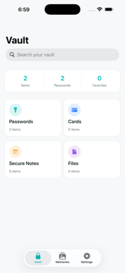
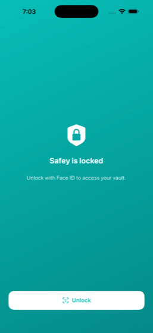
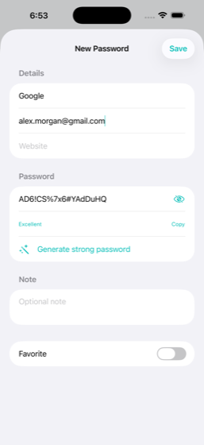

Safey is a private vault for iPhone — hide photos and videos, and keep your passwords, cards, notes and files encrypted on your device and locked behind Face ID.
Download on the App Store
Most apps hide only photos, or only passwords. Safey is a true vault — it keeps anything you need private in a single, encrypted place.
Move private photos and videos out of your camera roll into a Face-ID-locked album no one else can open.
Store every login with a built-in generator that creates strong, unique passwords in one tap.
Keep payment cards, PINs and CVCs encrypted and revealed only after a biometric check.
Private notes for anything sensitive — recovery codes, wifi passwords, passport details.
Store any file — IDs, certificates, PDFs, contracts — safely inside your vault.
Find anything in a second, and restore your entire vault on a new iPhone just by signing in.
Your secrets are encrypted with AES-256 on your device before they’re ever synced — so no one else can read them, not even us. Your vault opens only for you, behind Face ID, Touch ID or your passcode, and auto-locks the moment you leave the app.


iPhone’s built-in Hidden album helps tidy your camera roll, but it isn’t real security — the album can be opened by anyone who unlocks your phone, and its contents still sync and appear in some views. Safey is different: private photos and videos are moved into a separate, encrypted vault that only opens with your face or passcode. Hand your phone to a friend or a child and your private moments stay private.
The same protection covers your passwords, cards, notes and files. Instead of scattering sensitive things across Notes, Photos and a password app, Safey keeps them together in one place that’s locked, encrypted and built to stay yours.
Download Safey free. Upgrade for extra storage whenever you need more room for files and photos.
Download Safey, open the photo vault, and import the pictures and videos you want to hide. They’re moved into an encrypted, Face-ID-locked album and removed from your main camera roll, so they never appear when someone scrolls your photos.
Yes. Sensitive fields — passwords, card numbers, CVCs, PINs, note contents and your photos — are encrypted with AES-256 on your iPhone before they’re uploaded. The encryption key lives in your device’s Keychain and never leaves it, so no one else can read your data.
Passwords and logins, payment cards, secure notes, any files or documents (IDs, certificates, PDFs), and private photos and videos in a hidden, Face-ID-locked album.
Your vault is locked behind Face ID, Touch ID or your device passcode — no one can open Safey without it. Your data syncs privately, so you can restore everything on a new iPhone by signing in.
Safey is free to download and use. Optional subscriptions add extra cloud storage (50 GB or 200 GB) for your files and photos.
Yes — Safey stores your logins and includes a one-tap strong password generator, alongside your cards, notes, files and photos in a single private vault.